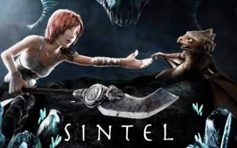

Big Buck Bunny
Pistas disponibles en el reproductor
Big Buck Bunny
Project Peach
1:00

Sintel
Blender Institute
0:52

Caminandes Llamigos
Blender Institute
2:30
Project Peach
1:00Chrome
Firefox
Edge
Opera
Test de compatibilidad entre navegadores
Descripción
Se ha testeado el reproductor en los navegadores Firefox, Chrome, Edge y Opera. Se ha generado una tabla en la que se resumen los resultados obtenidos para cada funcionalidad. El icono "check" indica que el resultado es satisfactorio, de lo contrario, se indica con una cruz que no ha funcionado correctamente.
Metodología
A continuación, se describen las funcionalidades y cómo se evalúa.
- Vídeo: El elemento video es capaz de visualizar el contenido.
- Play/pause: El botón de play/pause funciona correctamente.
- Barra de progreso: Al hacer click sobre la barra nos dirige correctamente al instante de reproducción que corresponde.
- Cambiar pista: Al clicar sobre un vídeo de la lista de reproducción, este carga correctamente.
- Filtro SVG: El filtro SVG se aplica o desactiva correctamente sobre el vídeo.
Para el resto de parámetros, se ha consultado la web de html5test.com. Incluir una captura del sitio rompe el diseño, así que se ha includo en la tabla.
Resultados
| Nombre | Google Chrome | Firefox | Microsoft Edge | Opera Browser |
|---|---|---|---|---|
| Logo |  |
|||
| Versión | 83.0.4103 | 77.0.1 | 44.18362 | 68.0.3618 |
| Video | ||||
| Play/Pause | ||||
| Barra de progreso | ||||
| Cambiar pista | ||||
| Filtro SVG | ||||
| Video element (html5test.com) | ||||
| H.265 support (html5test.com) | ||||
| Parsing inline SVG (html5test.com) | ||||
| Canvas 2D graphics SVG (html5test.com) |